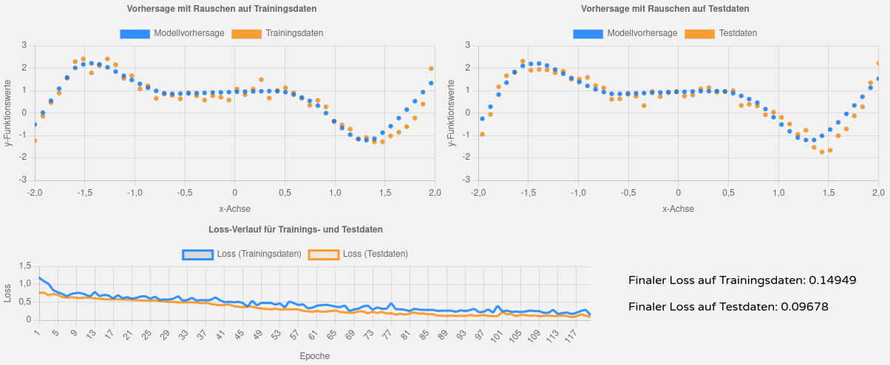

Modul Deep Learning - EA 2: Regression mit FFNN
Warten auf Trainingsbeginn...
Finaler Loss auf Trainingsdaten:
Finaler Loss auf Testdaten:
Warten auf Trainingsbeginn...
Finaler Loss auf Trainingsdaten:
Finaler Loss auf Testdaten:
Warten auf Trainingsbeginn...
Finaler Loss auf Trainingsdaten:
Finaler Loss auf Testdaten:
Einstellungen und verwendete Parameter des Modells:
Grundsätzlich erreicht das trainierte Modell eine gute Approximation an die gegebene Funktion. In seltenen Fällen werden Teile der Funktion schlecht nach-empfunden - einen direkten Zusammenhang zu den Trainingsdaten konnte ich nicht erkennen. Folgende Beispiele sollen dies verdeutlichen. Beide Screenshots sind mit dem gleichen Modell erstellt.
Beispiel für eine (sehr) gute Approximation:
Beispiel für eine fehlerhafte Approximation:
Die Einstellungen und Parameter des Modells wurden nur leicht modifiziert, um noch etwas bessere Ergebnisse zu erreichen. Overfitting kann in diesem Aufgabenteil nicht entstehen, da alle Trainingsdaten exakt auf der Ground Truth liegen. Overfitting tritt erst auf, wenn die Trainingsdaten ein gewisses Rauschen aufweisen und nicht mehr perfekt auf der gesuchten Funktion liegen. Overfitting beschreibt dann den Zustand, wenn das Modell die Trainingsdaten zu genau nimmt und somit von der eigentlich gesuchten Funktion abweicht.
Einstellungen und verwendete Parameter des Modells:
Bei Aufgabe 3 soll das neuronale Netz bestmöglich generalisieren. In 9 von 10 Versuchen ist der Loss auf den Testdaten kleiner als der Loss auf den Trainingsdaten. Der kleinere Loss auf den Testdaten zeigt, dass das Modell gut auf unbekannte Daten reagiert und nicht nur auswendig lernt. Um das Modell robuster zu gestalten wurden sowohl Dropouts genutzt, als auch durch Regularisierung die Gewichte begrenzt.
Beispiel für eine gute Generalisierung:
Einstellungen und verwendete Parameter des Modells:
Bei Aufgabe 4 sollte Overfitting bewusst provziert werden. Um das Phänomen besser darzustellen, wurden dafür die Trainingsdaten des aktuellen Trials ausgedünnt. Wenn nur sehr wenige Datensätze (z.b. N = 15) vorhanden sind, lässt sich das Phänomen des Overfittings sehr schön zeigen. Mit steigender Anzahl an Datensätzen wird dies immer schwieriger.
Beispiel für deutliches Overfitting:
Die Web-Anwendung basiert auf einer HTML-Datei, die mit CSS gestylt und JavaScript interaktiv erweitert wurde. Zusätzlich wurden folgende Frameworks verwendet:
In der Anwendung werden keine gespeicherten Modelle verwendet. Bei jedem Aufruf der Webseite werden die definierten Modelle für R2, R3 und R4 jeweils neu (mit den gerade aktuellen Trainingsdaten) trainiert und für die Vorhersagen genutzt. Trotz der vielen Trials während der Entwicklung und Optimierung der Modelle, kann es passieren, dass der aktuelle Zustand in seltenen Fällen eine nicht optimale Lösung der Aufgabe darstellt. Mit einem Reload der Webseite wird zu hoher Wahrscheinlichkeit ein besseres Ergebnis erzielt.
Die Anwendung wurde iterativ entwickelt: